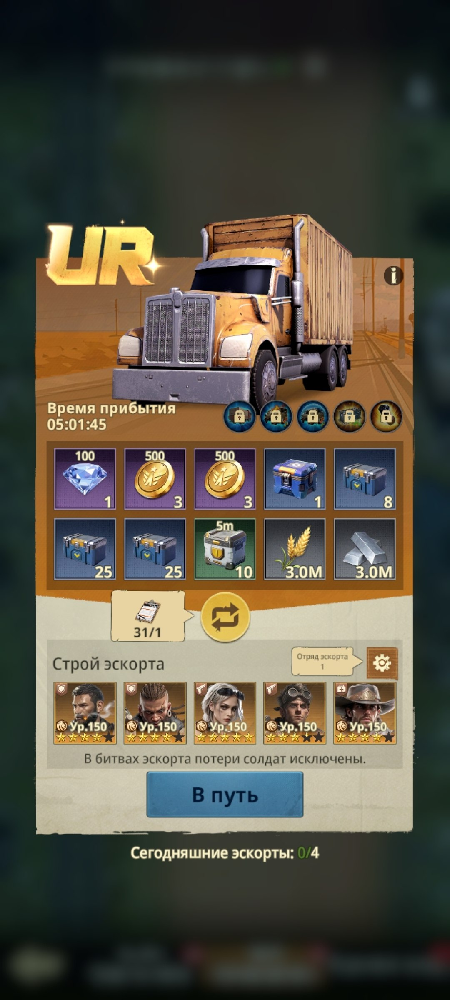
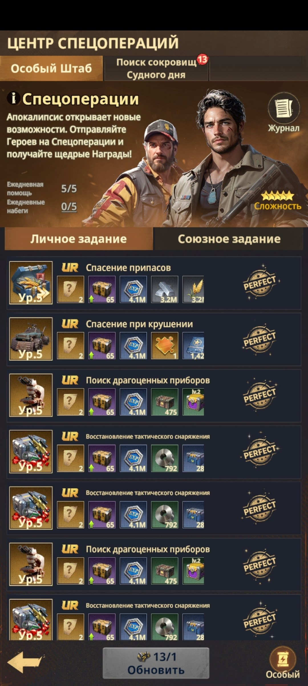
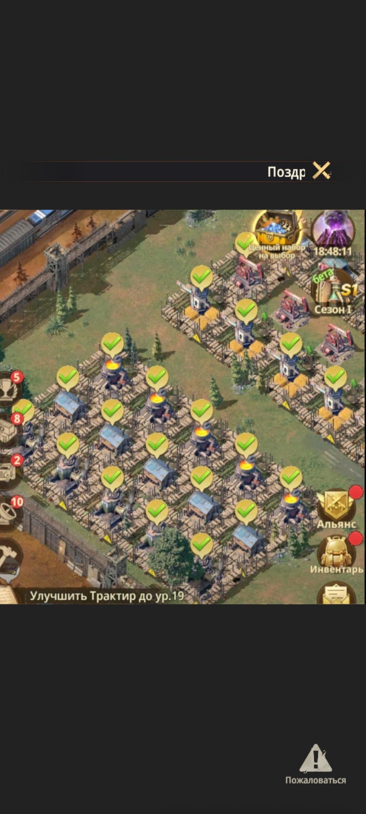
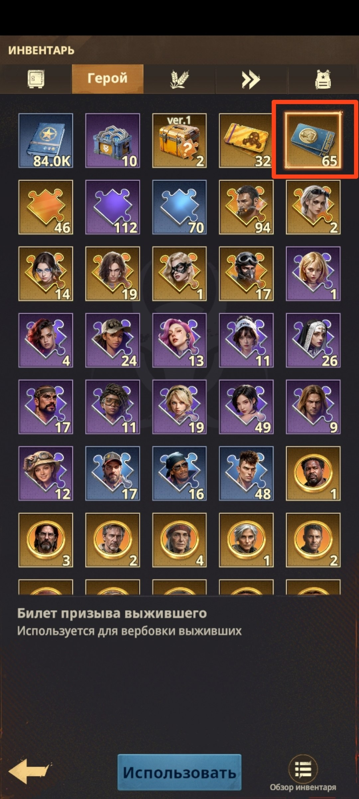
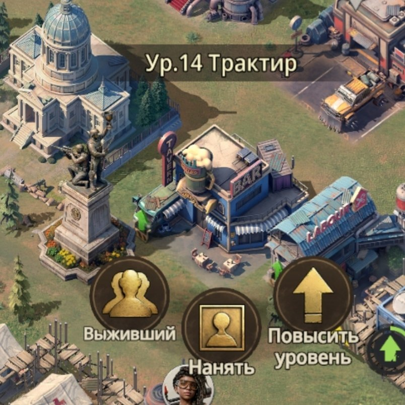
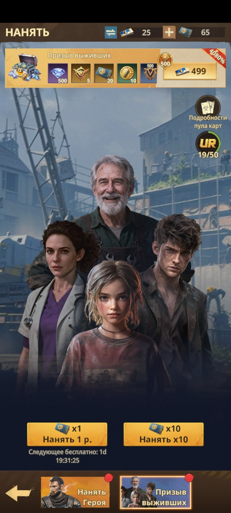

📆 Вторник
📆 Вторник ❓ За что получаем очки VS во Вторник? ⚠️ С 5 утра МСК Вторника и до 5 утра МСК Среды копите все задания Радара ⚠️
🚚 Только Золотые/UR транспортники и Спецоперации Прокручивайте каждый Транспортник и Спецоперацию до появления Золотого/UR и только потом отправляйте - именно за них вы получите по 220К и 144К очков VS за каждую отправку.
🏗️ Завершённые стройки и ускорение действующих Со временем вы научитесь и привыкнете не снимать «галочки ✓» с завершённых построек специально под Вторник и Пятницу. Тратьте накопленные ускорения, чтобы завершить/ускорить действующие стройки. Затем можете начать улучшать здания с меньшим временем строительства. Перед этим не забудьте встать в очередь на должность Министра строительства - она сокращает время стройки. 💡 Старайтесь делать всё это одновременно с фазой «Строительство» в «Готовности к миссии», чтобы получать очки и там, и там.
🎫 Использование карт найма Выживших Используйте все накопленные карты найма Выживших в здании Трактира. А после снова копите эти карты до следующего Вторника.

🚚 UR-транспортник - крутите до золотого перед отправкой

🎯 Центр Спецопераций - задания UR-качества дают очки VS

🏗️ Завершённые постройки с галочками - не снимайте их специально под Вторник и Пятницу

🎫 Инвентарь - «Билет призыва выжившего», копится до Вторника

🍺 Здание «Трактир» - здесь нанимаются Выжившие за накопленные билеты

👥 Экран «Нанять» → «Призыв выживших» - тратим накопленные карты